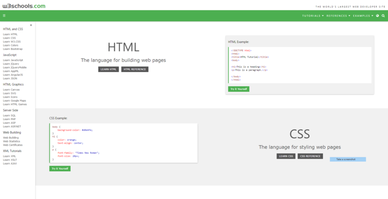

About Website
My Interests
Home page
This website was produced as part of my coursework for Level 2 Digital Technologies. It shows evidence that I am able to advanced techniques to develop a website, and I can use the Design Process to develop a design.
- I have used appropriate tools and techniques for the purpose and end users.
For example, I have created a website using html/css with an external stylesheet. The material is structured and formatted using a range of tags and styles. It has clear headings, body text and lists/bullets if required.
- I have applied appropriate data integrity and testing procedures.
For example, the site has been tested/previewed either in two unrelated browsers.The text has been proof read and there are no obvious spelling/grammatical issues.
- I have used relevant conventions.
For example, design elements such as contrast, repetition, alignment, proximity and white space to lay out their site.
- I have explained relevant implications.
For example, I have explained why copyright should be honoured/images should be credited. I have mentioned why the site should be accessible for colour blind/visually impaired users. I have stated why their site should be easy to navigate (the site may have minor navigation issues).
- I can define the purpose of the digital media outcome and the requirements of the end users.
I investigated many examples to learn about website design and current design trends. I can generate and model a range of design ideas. For example, I have created a series of possible site layouts. I have experimented with different colour, background and font options. I have sketched wireframes for the initial layout of the page followed by mock-ups showing various options.
- I can explain relevant implications.
For example, I have mentioned the importance of honouring copyright and privacy (e.g. getting permission from students whose photos appear in the site) I have explained why the site needs to be aesthetically pleasing, fully functional, easy to use and accessible.
I made my site using repl.it to script the html and css.
I used W3schoolsas a reference.

Visit Whangarei Falls
Visit Mt Taranaki